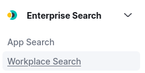

3.1.6.1 Primeros pasos con Kibana
1. Interfaz Principal
Para comenzar, se puede ver la interfaz principal que presenta Kibana y todas sus opciones.
Figura 1. Panel home.
2. Escenario
Para tener disponibles diferentes eventos de log de sistema y autentificación para la explicación de los diferentes puntos de este capítulo, se han realizado las siguientes configuraciones:
Filebeat
Se ha modificado el fichero system.yml que se encuentra en /etc/filebeat/modules.d descomentando la sección syslog y añadiendo en vars.path la ruta de los ficheros de donde se desea obtener los registros. De esta forma, filebat obtendrá registros de autenticación y de sistema.
Logstash
En el servicio de logstash hay que añadir un nuevo fichero de output para que transfiera los registros que se recuperan de filebeat a elasticsearch. En este caso no se hace uso de filtros. Para realizar un ejemplo diferente a lo que se vio en el capítulo 2.1.4, se utiliza el mismo fichero para el input y output. Si se observa la imagen inferior, se creará un índice que se llamará auth-syslog-2022-03-20, ya que este proceso se realiza el 20 de marzo de 2022. Una vez se ha modificado el fichero, hay que reiniciar el servicio de filebeat y logstash para consolidar los cambios realizados.
indice creado
Una vez se ha reiniciado el servicio logstash, si se hace la petición para listar los índices, ya se podrá visualizar el nuevo índice auth-syslog-2022-03-20.
Crear Dataview
El siguiente paso es crear el DataView del índice.
Si se seleccionan las 3 rayitas de arriba a la izquierda, se puede ver el menú con todas las opciones disponibles.
 |
 |
A continuación se describen las opciones más importantes y útiles de Kibana.
1. Discover
Apartado donde se pueden encontrar los datos de prueba, en forma de tabla de datos muy similar a como se vería en el archivo original. En esta tabla, cada fila se divide en un timestamp (hora a la que surgió), y el resto de la alerta o evento. Esta alerta o evento se divide como se puede observar en diferentes campos.
Figura 2. Panel Discover.
También se dispone de un gráfico de barras que muestra el número de alertas que han aparecido en un tiempo determinado.
Figura 3. Gráficos de los últimos 15 minutos.
En la barra lateral izquierda (available fields) se pueden ver todos los campos que contienen las alertas. Lo interesante es que con estos campos se puede filtrar en la tabla según que información interesa mostrar. Para ello, hay que ir al campo que interesa y pulsar en el botón +.
Figura 4. Filtrado de datos por campos.
Se pueden añadir todos los campos que se deseen visualizar y en la misma barra saldrá un apartado de selected fields que se refiere a los campos que se han seleccionado. Como ejemplo, en la figura 5 se han filtrado los datos por los campos user.name y host.ip. Una vez aplicados filtros, se puede observar en la figura 6 que en la tabla/gráfico únicamente aparecen aquellas alertas filtradas por lo campos seleccionados, consiguiendo más claridad a la hora de visualizar los datos.
|
Figura 5. Filtrado por los campos ip. |
Figura 6. Resultado del filtrado. |
Si se desea guardar la tabla, arriba a la derecha (figura 7) se tienen todas las opciones que se pueden hacer con esta. Para guardar, hay que pulsar en 'Save'.
Figura 7. Botonera superior.
Una vez se pulsa 'Save', aparece una ventana donde hay que darle un título y descripción a los datos a guardar.
Figura 8. Título y descripción de los datos a guardar.
Si se quiere abrir cualquier tabla de datos que se haya guardado, desde la misma zona de guardar hay que pulsar en Open. Aparecerán todas las tablas que se tienen guardadas. Como ejemplo, se busca la que se acaba de crear y se hace click sobre ella.
Figura 9. Abrir datos guardados.
Obra publicada con Licencia Creative Commons Reconocimiento No comercial Compartir igual 4.0